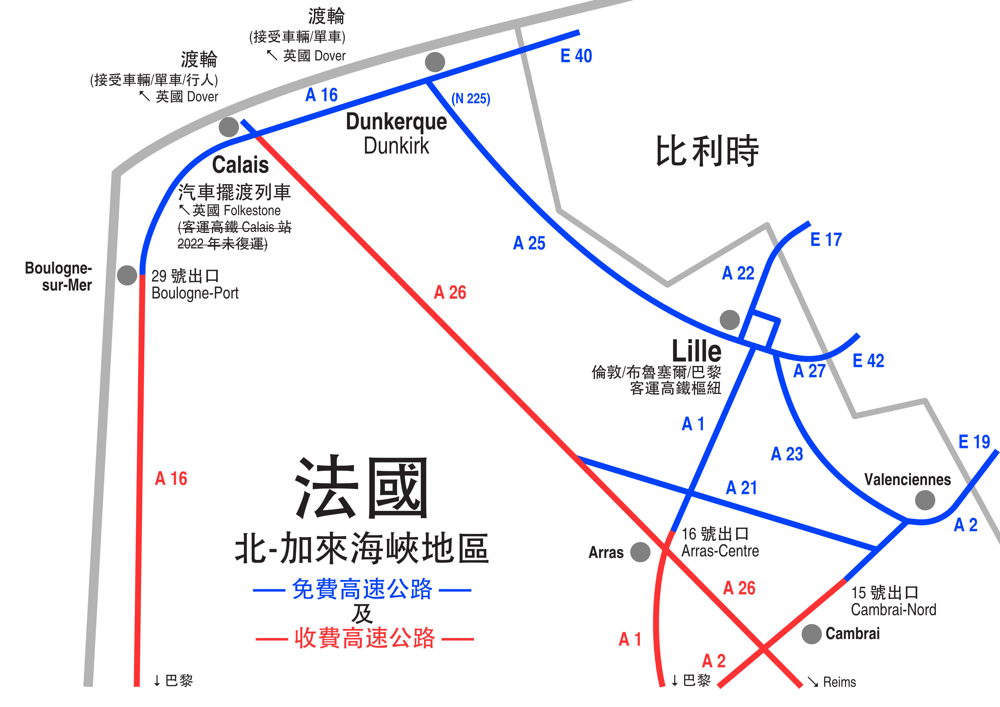
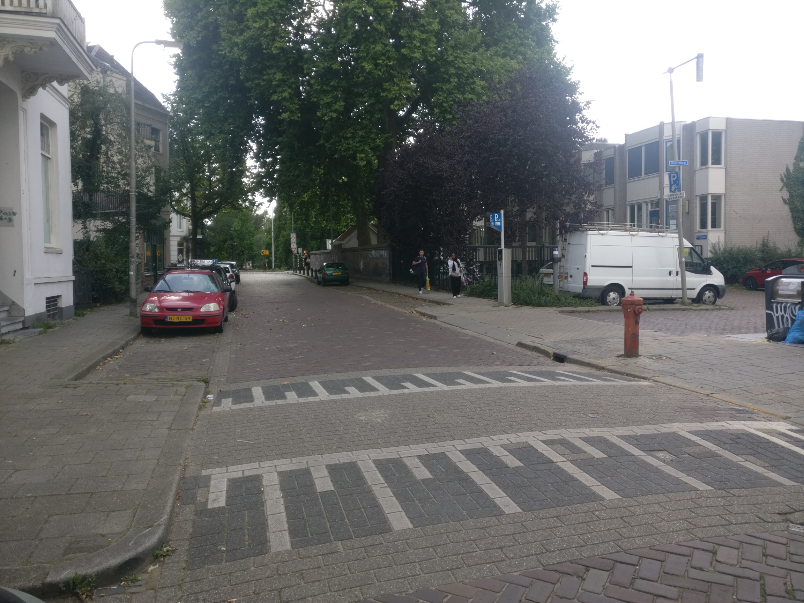

26-07-2022
時不時見倒啲英國嚟嘅車喺荷蘭路面行走。以下係一啲荷蘭駕駛貼士，特別係一啲習慣揸右軚車嘅人士，喺荷蘭呢啲左軚（道路右面行駛）國家要注意嘅一啲事項。
啲護照、簽證、海關、防疫類嘅問題，你要自己研究吓。（各人情況有異，政策改變迅速，此處不能盡錄。）小心查閱入境歐洲大陸（神根公約國），同埋再入境英國所需。
歐洲大陸大部份國家，譬如法國、德國、荷蘭、比利時、盧森堡呢啲，都係神根公約嘅成員。呢啲國家之間嘅邊界冇固定邊境管制，通常啲人可以掂行掂過。（實際上，你喺任何地方都有可能畀人查證，特別係邊境地區。你都係要帶定身分證明文件。）
至於你架英國車去歐洲大陸，可以睇吓英國 AA 同埋英國政府有啲咩講解：
如果你架車前後兩個車牌冇 UK 字樣，你架車要貼上有 UK 字樣嘅貼紙。（舊有嘅 GB 字樣已經失效；有英格蘭／威爾斯／蘇格蘭字樣同埋旗幟嘅車牌喺歐洲大陸一樣冇效，都係要貼上 UK 字樣貼紙。）
右軚車同左軚車嘅車頭燈嘅角度有啲唔同。你㗎右軚車喺歐洲大陸須要喺車頭燈貼上貼紙，令到車頭燈光射嘅方向改變。呢張貼紙叫做 headlamp beam deflector, headlight beam convertor 之類。
由英國，你可以直接喺荷蘭上岸，或者喺法國上岸然後經比利時去荷蘭。（現時 2022 年，啲來往英國同比利時嘅航線摺晒，所以唔使諗喺比利時上岸。）
英國 Harwich（倫頓以東北）– 荷蘭 Hoek van Holland（鹿特丹港出口位北）
Stena Line 日夜各一班
呢條航線，用公共交通來往都好方便。英國碼頭同 Harwich International 火車站相連，荷蘭碼頭有鹿特丹地鐵 B 線 Hoek van Holland Haven 站。另外仲有船飛 + 英國火車飛嘅套票（荷蘭方面嘅鹿特丹公共交通飛／荷蘭火車飛你要到埗後另外買，詳情；你冇車嘅話，套票有可能平過就噉買船飛）。
英國 Hull – 荷蘭 Rotterdam Europoort（鹿特丹港出口位南）
P & O 夜班
英國 紐卡素 Newcastle – 荷蘭 IJmuiden（阿姆斯特丹港出口位）
DFDS 夜班
以下講三條來往荷蘭最方便嘅英法路線。喺法國到埗後可以揸車經比利時去荷蘭。喺法國 Calais 或 Dunkirk 上岸嘅好處係航程短，班次基本上無間斷。
呢三條航線，都係上船／火車前就要過對岸嘅入境關。（由法國去英國係喺法國一地兩檢。反方向，英國係冇出境檢查嘅；運輸公司會向英國移民局提供你嘅護照資料。）
英國 Dover（倫頓以東南）– 法國 Calais
船程最近。兩間公司：DFDS, P & O
英國 Dover（倫頓以東南）– 法國 Dunkerque（英文 Dunkirk；廣東話 燈卻／鄧寇克）
船程遠少少，但係 Dunkirk 離比利時邊境比較近。船公司：DFDS
英國 Folkestone（倫頓以東南）– 法國 Calais
英倫海峽汽車擺渡列車 Eurotunnel
英倫海峽隧道係冇得畀你就噉揸車過去嘅。啲車要一架一架駛入一架大火車裏面，架火車將啲車一次過駛過對面。架大火車內籠似一條小型單線隧道噉嘅款。啲車喺裏面一架跟住一架停低。泊好架車之後你可以落車鬆吓腳，不過火車內除咗廁所外就冇其他設施。
法國高速公路多數要收費（啲高速公路級嘅道路編號都係 A 字頭），不過法國極北地區有唔少高速公路唔使畀錢（見下圖）。呢個免費區間內啲城鎮都幾值得去 hea 吓嘅。呢一帶有四條高速公路入比利時。（啲唔係 A 字頭嘅道路絕多數唔使錢。）
比利時、荷蘭、同盧森堡啲高速公路係免費嘅。比利時有一條收費隧道，荷蘭有兩條：
德國現時（2022 年）啲高速公路係免費嘅。不過佢哋諗緊搞啲類似瑞士／奧地利嗰啲公路貼紙。
歐洲好多城市市中心限制啲排污情況差嘅車輛進入。法國德國須要你買張環保貼紙（環保稅，以你架車嘅排污程度分等級）。布魯塞爾須要你網上登記你架外國（比利時同荷蘭以外）嘅車輛先至可以進入市中心（安特衛普同根德都有類似嘅嘢）。事前可以睇吓呢度睇吓你架車入唔入得你想去嗰個城市嘅市中心。（你預先網上搞環保貼紙嘅話，好難講佢幾時寄到去你屋企。你可以去到法國德國或者鄰國先至買環保貼紙，但係可能要預留一兩個鐘搞呢樣嘢。唔同地方嘅價錢會唔同；喺啲鄰國搞可能比較貴，但係可能比較快。記得帶齊汽車文件；佢要睇吓你架車咩牌子型號同埋咩年出。）
喺歐洲大陸，車喺路嘅右邊行駛，扒頭嘅話要喺左邊扒頭。如果你揸右軚車嘅話，會唔係好睇倒左邊嚟嘅對頭車。呢樣嘢好危險。你要扒頭嘅話，要靠坐喺你左邊嘅乘客同你睇吓左邊有冇對頭車，睇吓你可唔可以安全扒頭。
離開咗架車一排之後再上車，好容易會因為攰，或者朝頭早起身懵盛盛，而搞錯咗行車嘅方向。要特別小心。向後褪出泊車位嘅時候，亦都要清楚諗吓車尾要喺條路嘅咩位置。
危急嘅時候，揸慣右軚／路面左邊行嘅人，多數會下意識駛架車向路面嘅左邊去逃避危難。但係喺歐洲大陸，你須要駛向路嘅右邊去逃避危難。（喺啲鄉郊路面冇中線嘅路，呢樣嘢好容易搞錯。）你搞錯咗嘅話就好容易同對頭車相撞。
如果你喺歐洲大陸租架左軚車，記得波棍喺你右手邊。危急嘅時候，揸慣右軚嘅你可能會下意識向左 faak 隻左手去揸個波棍；但係你而家揸緊嘅係左軚車，你 faak 隻左手向左邊只會大力撞隻車門。（本人經驗...）
租車好多時得棍波畀你揸。波嘅方向冇變：一波仍然係波棍嘅左上。但係揸左軚車嘅時候，一波係拉入向上（右手），唔係推出向上（左手）。呢樣你要習慣吓。你開車前要試埋係點入後波，因為架架車唔同。（腳掣 configuration 冇變。）同埋歐洲車，你開車之前要試吓邊邊係水撥，邊邊係打燈，呢兩樣有可能同右軚車相反（又可能係一樣，要睇車型號）。
落車嘅時候，荷蘭教車師傅會教你一定要用離車門遠啲嗰隻手去開門；佢用意係要你個身向後擰一吓，睇吓有冇單車喺旁邊閃過嚟。荷蘭真係好勁多單車。
你要轉左／轉右嘅話，記得要讓畀喺你旁邊（同你平行）直行嘅單車或者行人。
紅色路面（蠟青／磚）： 多數係你要行慢啲嘅地方。好多單車徑路面係紅色。
有樣嘢叫做 fietsstraat / bicycle street。你揸車入呢啲街嘅時候，記得單車係大晒。車速係 30 km/h 或更低。
有樣嘢叫做 woonerf。你揸車入呢啲街嘅時候，記得行人係大晒，單車次之。車速係 15 km/h。
荷蘭文 toegestaan 係「允許」，uitgezonderd 係「除外」。多數汽車單行嘅路，單車都係可以雙行嘅，譬如你會見倒啲「單行，單車 uitgezonderd」嘅路牌。總之你揸車，都要提高警覺，準備單車喺任何方向駛過來。
「鯊魚牙」：地面一排倒三角係解你要讓（通常，但係唔一定，佩有倒三角讓先路牌）。下面呢幅圖有前後兩排鯊魚牙：首先你要讓左右兩邊沿住單車徑嚟嘅單車，之後你要讓 T 字路口左邊嚟嘅車。
Zone 30 ／冇任何讓先線：有一個路牌，係 ZONE 下面有個紅圈 30 字樣。Zone 30 區內，時速係 30 km/h。 入咗 Zone 30 之後，通常啲內街冇任何讓先線。去到一個路口，如果條條路都冇讓先線，同埋每條路嘅高度都一樣嘅話（即是所有行人路都冇或者都有整高嘅話），你要讓畀任何由右邊嚟嘅車／單車。即是就算你係直行，都要讓畀右邊嚟嘅車（無論佢直行／轉左／轉右）。下圖係一個例子：你直行都要讓畀右邊出嚟嘅車。
下圖情況唔一樣：因為右邊嚟嗰條街出口位嘅行人路高咗，變咗佢要讓先。喺呢個情況，你直行唔使讓畀右邊嚟嘅車。（你自己路中心嗰個 speed bump 唔計。）
時速：比起英系國家，歐洲大陸嘅時速限制路牌比較少，好多時要靠其他資訊去知道時速係乜嘢。
（以下講嘅時速限制，只適用於一般私家車。）
其中一個你要知嘅資訊係你喺城區內或城區外。你入一個城市嘅時候，會有一個藍底嘅路牌話你聽呢個城鎮嘅名係乜。但係其實除咗話你聽呢個城鎮叫乜之外，佢係話你聽你入咗城區內：冇其他指示嘅話，時速一般係 50 km/h。
喺城區外，一般嘅時速係 60 km/h。中間有雙白線嘅路係 80 km/h。雙白線之間再加條藍綠色實心線嘅係 100 km/h。快速道 (autoweg) 最多行 100 km/h。高速公路 (autosnelweg) 最多行 130 km/h。
A 同 N 字頭嘅道路編號係荷蘭本國嘅道路編號：A 字頭係高速公路 (autosnelweg)，N 字頭係其他有冧巴嘅道路。另外仲有 E 字頭嘅道路編號；E 字頭嘅係歐洲洲際嘅道路編號，但係荷蘭冇人理呢啲 E 字頭嘅道路編號。（鄰近國家都類似，除咗比利時；比利時啲公路，啲人會認得啲 E 字頭嘅編號先，冇 E 字頭先至會用本國嘅道路編號。）
荷蘭油價一般貴過德國、比利時、法國。盧森堡最平。（但係現時 2022 年，各國政府有唔同嘅經濟紓困政策，油價可能突然平咗一截。去之前查吓各國油價。）